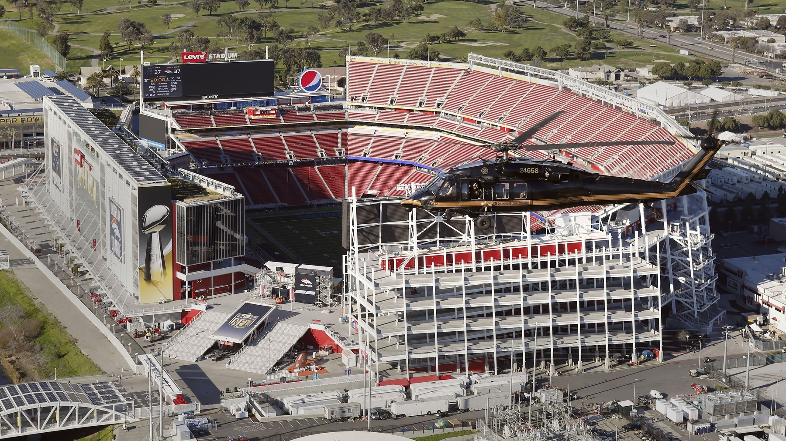

Plus 42, Best Margin in the NFL, and I Spent Tuesday Counting Who's Out
Twenty seven and seven in Melbourne. Thirty five and thirteen at Levi's. Sixty two points scored, twenty allowed. Nobody else in the league is within fifteen of that, and the training room looks like a bus crash.

I did the math on a paper towel in the kitchen because I didn't trust myself to hold the numbers in my head before coffee. Twenty seven plus thirty five is sixty two. Seven plus thirteen is twenty. Take twenty off sixty two and you get forty two.
Plus 42.
Best point differential in the NFL. I checked the rest of the league twice, standing there in the same Purdy jersey I slept in after Sunday, because the guy at work spent Monday calling the margin a mirage and I wanted him to be right so I could stop feeling superstitious.
He isn't.
Seattle's next, and they're at plus 27, and they're in our division, which is the part that kept me from doing a little dance next to the toaster. The Raiders are plus 26. Kansas City is plus 24. Everybody else is a different conversation.

He texted me "schedule." One word. Rams on the other side of the planet, Dolphins who spent the week practicing up the road in Napa. I sent him the paper towel photo and then I sent him the injury list, because if you're going to tell me a plus 42 is cheap you should have to look at who's producing it.
They're doing this with the training room full.
I hate the next part.
If I skip it I'm lying, and I've done enough of that in Septembers.

The guys who are not coming back
Ricky Pearsall had the PCL in his right knee repaired and he's done for 2026. Nine months, maybe longer. He hasn't had a clean year since they drafted him and I'm tired of writing that sentence, so this is the last time I'm going to linger on it today. He's out. That's the fact. The feeling can live in the other piece.

Jake Tonges tore his MCL, he's having surgery, and he's out for the year. Five touchdowns last season, gone, and George Kittle is out there without the guy who was supposed to spell him. Alfred Collins tore his patellar tendon in the week of practice before Melbourne and he's out for the season too. A second year tackle we were counting on, and the interior is already thinner than the depth chart wants to admit.
Mikail Kamara's knee put him on IR in camp and that season is over. Andrew Farmer's back did the same thing back in July. I'm not going to dress those two up as stars. They're still names on the out list, and the defensive line doesn't get to pretend the bottom of the roster is healthy just because the top of it is on television.
Brandon Aiyuk isn't an injury. He's gone. Locker cleared out, left the squad, and Kyle shut the door when somebody asked if he was an option while the receivers kept dropping. That door isn't opening. I'm only putting him in this piece so nobody in the group chat asks me again at 11pm.
Out for a while, and out right now
De'Zhaun Stribling had surgery on the deltoid ligament in his ankle. Close to ten weeks, which puts him somewhere around week 11 if the recovery behaves. He was the rookie we were yelling about in August. Now he's a date on a calendar.
Demarcus Robinson is out for Sunday. High ankle, suffered in the Miami game, and Kyle put it at three to six weeks. They may have to park him on IR. A club only gets eight guys back off that list all year, and we are already burning tickets. I don't know if Robinson gets one. I know he isn't playing Arizona.
Sam Okuayinonu broke his foot and had it repaired. He's out deep into the year, the kind of absence you stop counting in weeks and start counting in months. Christian Kirk, the calf, is on IR with a path back and he isn't eligible until week 5. Nick Martin, hamstring, same neighborhood, the hope being sometime around week 5. Nate Hobbs, groin, same window. Hope isn't a lineup.
Isaac Guerendo is on the physically unable to perform list with a pectoral injury, which means he can't play until after the fourth game. Mykel Williams is on that list too, the ACL from last November, and they aren't even bringing him into practice this week. The earliest he works with the team is week 4, on the side, and then you still have to see if the knee is a knee. I'm not penciling either of them in for anything that matters until I watch them hit somebody.
From cutdown, still sitting there: Austen Pleasants, knee, with a path back and no date I'm willing to circle. Brett Toth, concussion. Nick Zakelj, and I'm not going to invent a body part or a week for him. Darrick Forrest, same thing. They're out. If I learn more, I'll say more. I'm not filling blank spots with guesses so the list looks complete.
The guys I am not calling out, yet
Romello Height broke his hand. Surgery is Tuesday. Sunday is a long shot, and I'm leaving him off the official out list until somebody says the word, because this franchise has taught me that "outside chance" can mean anything from a brace to a month. James Thompson Jr. sprained his ankle high in the Miami game and he's doubtful. Doubtful, around here, usually means I write the name in pen by Friday.
Mike Evans and the hip. He left in the second half Sunday. Kyle said it has to be managed this week, and he also said Evans could've come back if the game had been close. I'm calling that managed, not out, until Friday makes a liar out of me. If Evans sits, the receiver room for Arizona is Deebo, KhaDarel Hodge, Jacob Cowing, and whoever they trust from the practice squad. That's a room. It's also a warning.

Twenty points.
That's the number I keep coming back to when the out list makes me want to close the laptop. They've given up twenty points in two games. Melbourne was a goal line stand and a shutout until the end of it. Sunday the Dolphins didn't reach the end zone until the backups were in and the score was already a rout. Plus 42 is sixty two scored and twenty allowed, and the twenty is a defense that's missing Collins, missing Okuayinonu, missing Williams, and still looks like it belongs to Nick Bosa and Fred Warner.
I know the schedule complaint. I made it myself on the flight home from the idea of Australia, before I'd even watched the tape twice. Then they did it again, at Levi's, in front of a building that had waited all summer, and the other sideline had spent the week in Napa like the zip code was going to help. You can call the opponents soft. You can't call plus 42 an accident when the infirmary is this crowded and the fourth quarter keeps ending with Mac Jones holding a clipboard.
Arizona's here Sunday at 1:05, same building. The week by week is on the schedule hub. Who we thought we had in August is on the depth chart, which you should read with this list in the other hand. Sunday in Melbourne is still in the Rams recap, and the home opener is in 35 to 13. The rest of it lives on the 49ers hub.
The paper towel is still on the counter. Plus 42 on one side, a stack of names on the other. I'm not throwing it out, and I'm not pretending the names aren't there. Arizona doesn't care about either number until Sunday.
More coverage: 49ers · NFL · Bay Area Sports Blog home